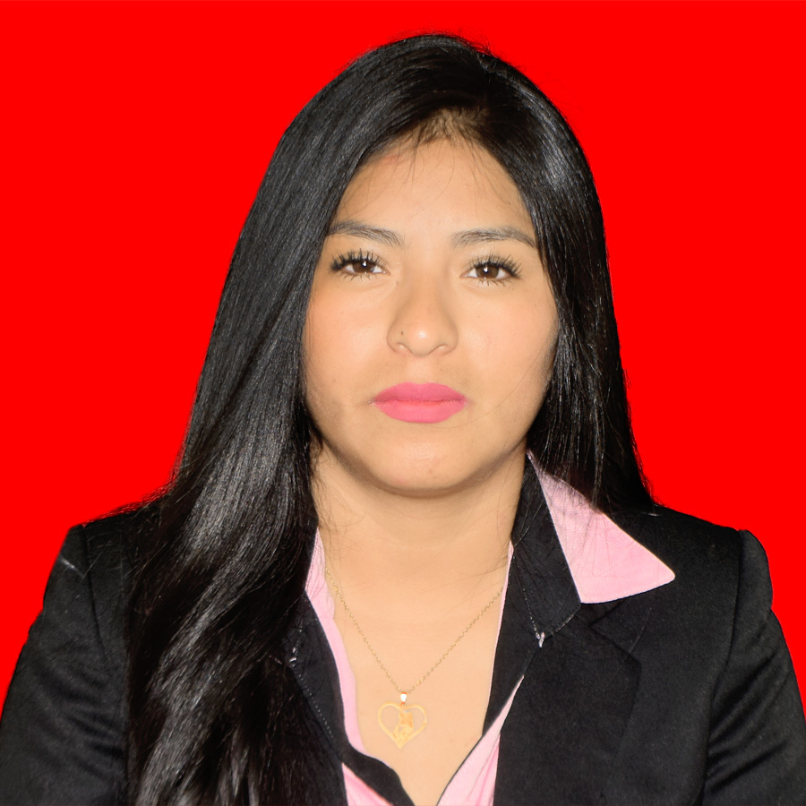
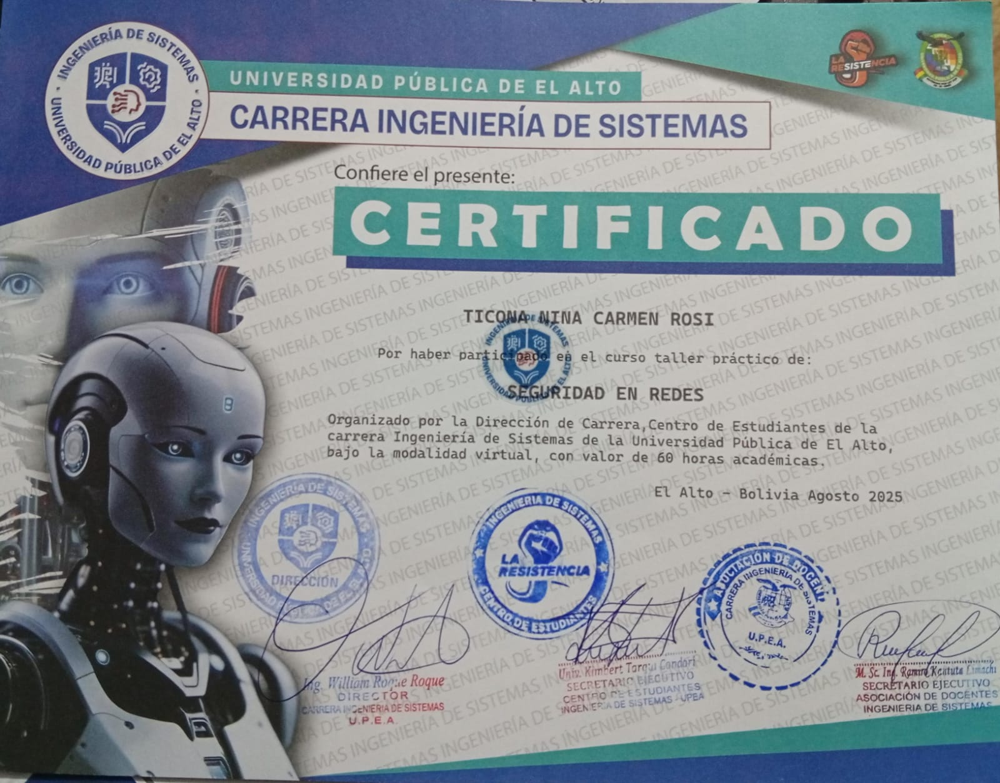
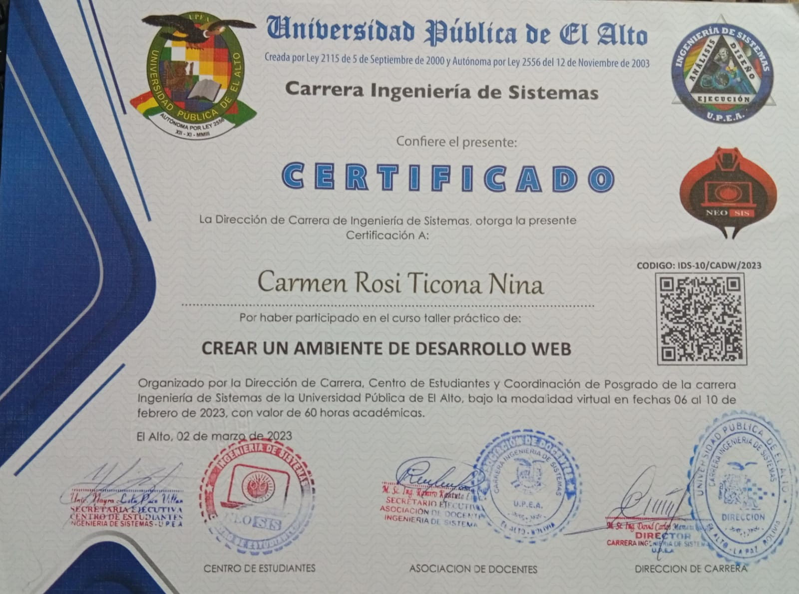
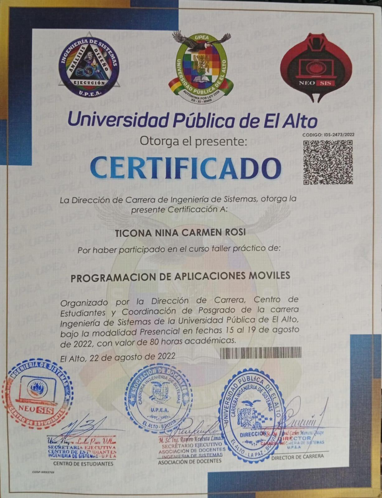

Estudiante de Ingeniería de Sistemas – UPEA
Estudiante de último año de Ingeniería de Sistemas de la UPEA, con formación académica en redes, sistemas informáticos y desarrollo de aplicaciones web. Interesada en apoyar en el área de Tecnologías de la Información, soporte técnico y mejora de sistemas institucionales.
Algunos de mis certificados relevantes:

Seguridad en Redes
UPEA | 60 horas | Agosto 2025

Crear un Ambiente de Desarrollo Web
UPEA | 60 horas | Febrero 2023

Programacion de Aplicaciones Moviles
UPEA | 80 horas | Agosto 2022
Interesada en realizar pasantías en el área de Sistemas / Informática, apoyando en soporte técnico, redes y desarrollo de soluciones informáticas para la gestión institucional.
Email: ticonaninacarmenrosi@gmail.com
GitHub: https://github.com/Carmenrositicona/carmen-rosi.github.io